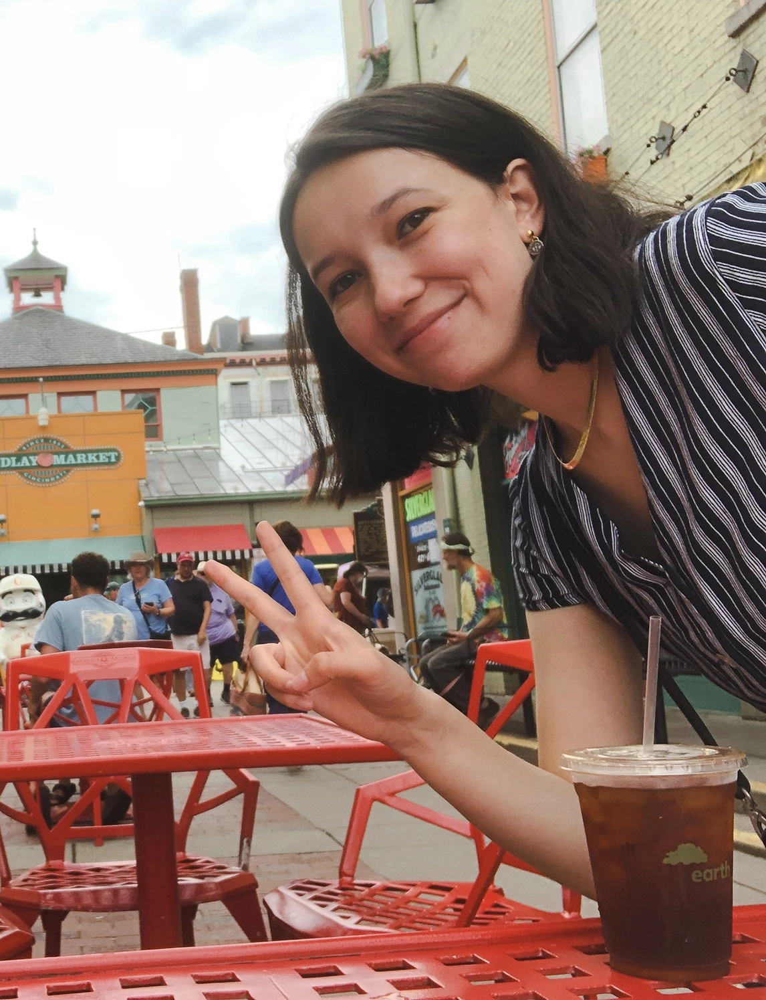

Based in Pittsburgh, Lucy (she/her) is a designer, image maker, and art director. She also is an avid dancer, fantasy-fiction reader, and history geek.
2021 BFA Communication Design grad of Washington University in St. Louis with a minor in Art History
Clients include: Contemporary Art Museum of St. Louis and Wabbani.
Awarded by the Golden Quills and Association of Alternative Newsmedia.
